1. Fungsi Bangunan : Kantor
2. Jumlah Lantai : 2
3. Tahun Dibangun : 2018
4. Pondasi : Batu kali
5. Rangka Atap : Baja ringan
6. Penutup Atap : Genteng beton
7. Plafond : GRC
8. Dinding : Bata ringan
9. Pelapis Dinding : Dilapis Cat (Diplester & Diaci)
10. Pintu & Jendela : Jendela Kaca rangka alumunium
11. Lantai : Keramik
Toilet 3
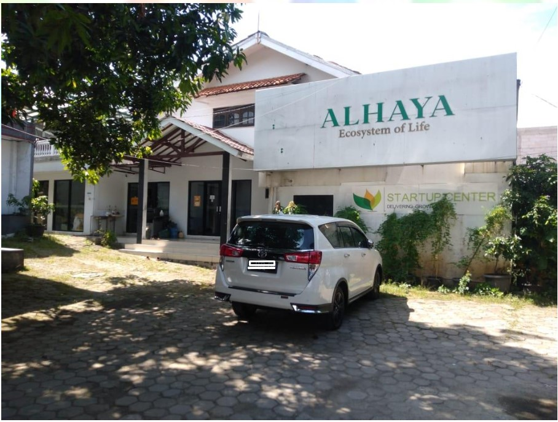
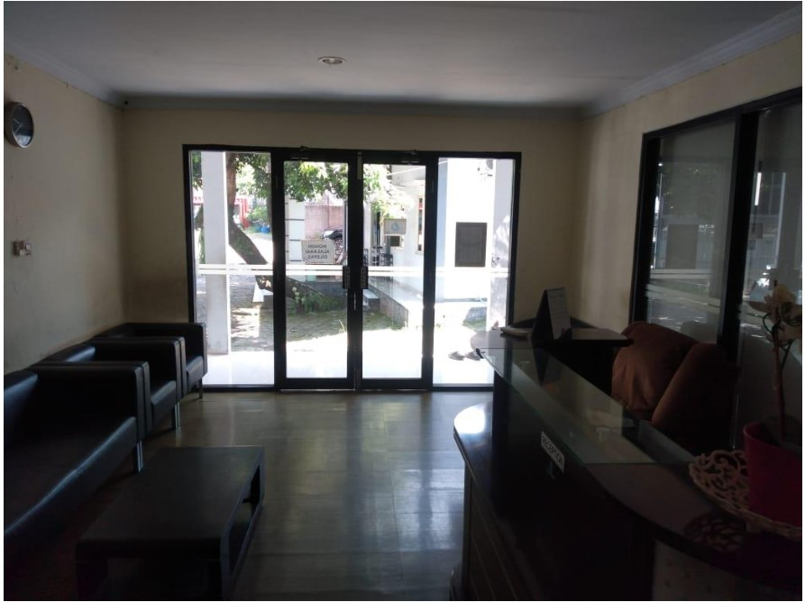
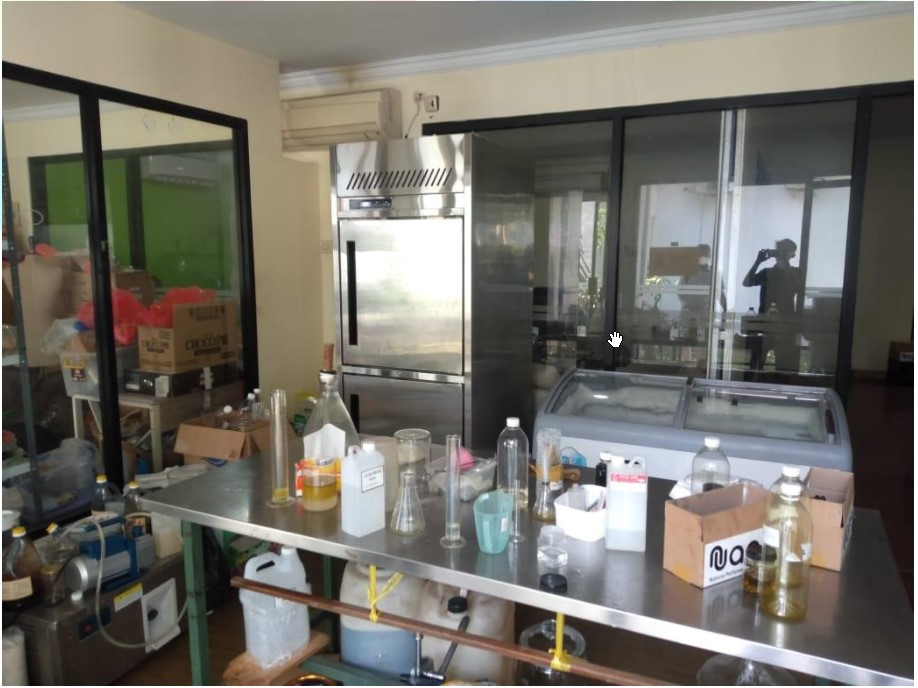
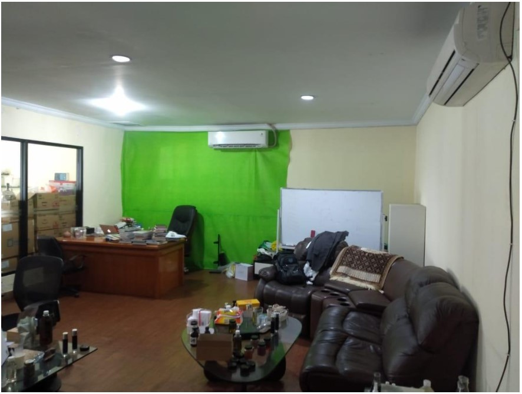
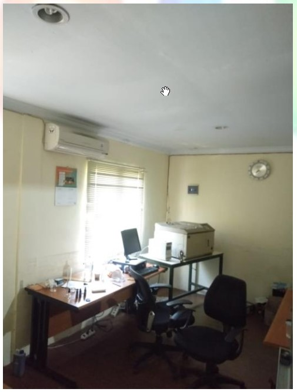
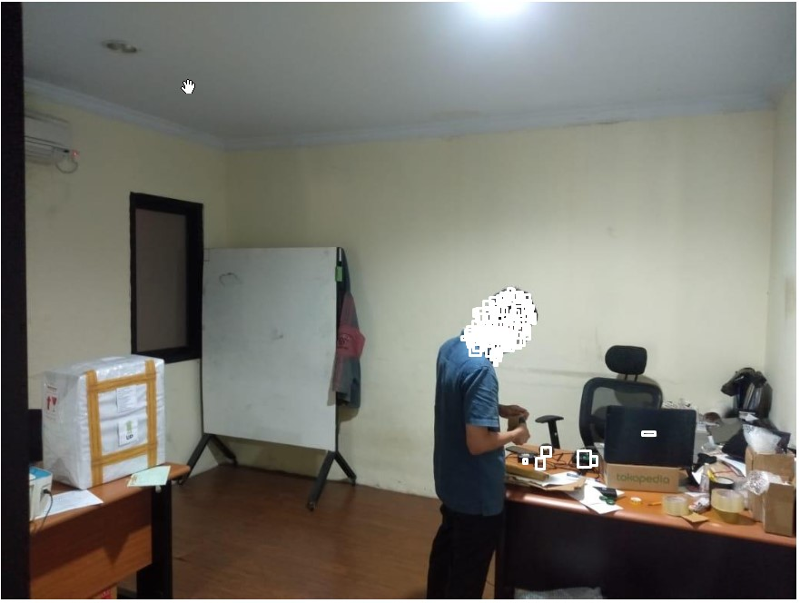
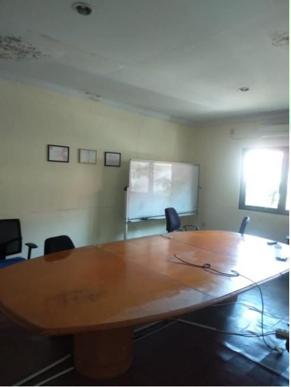
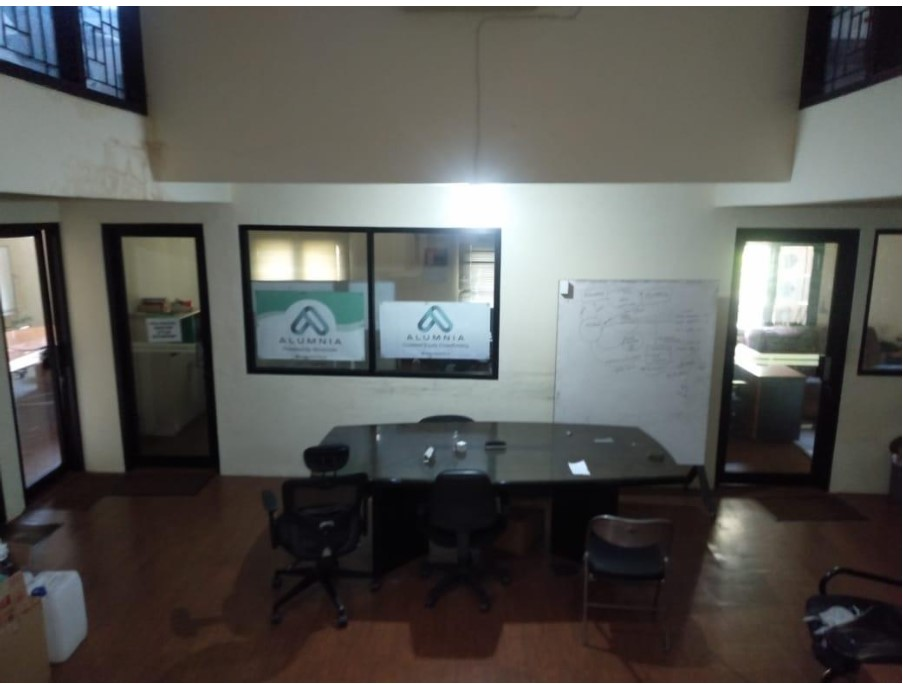
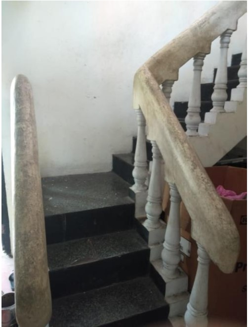
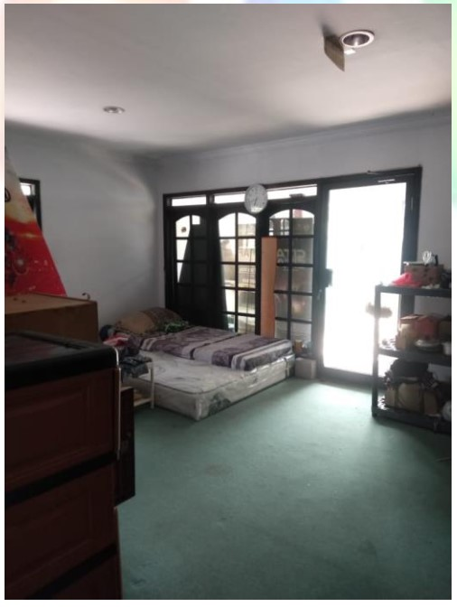
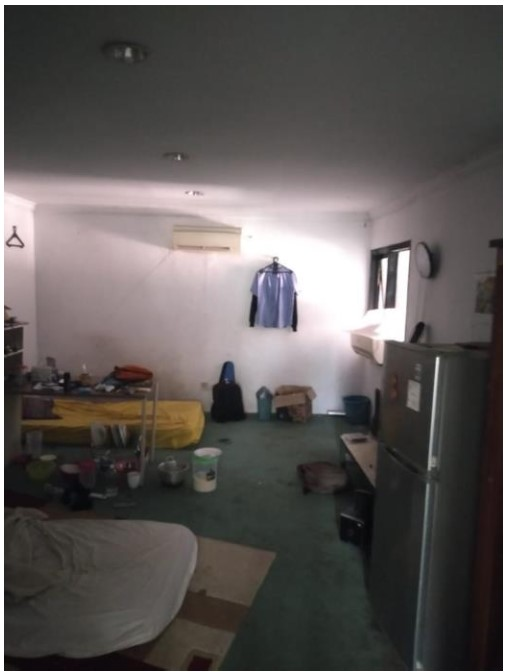
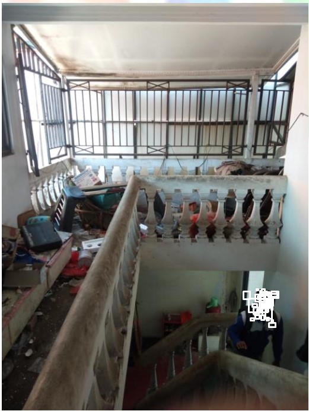
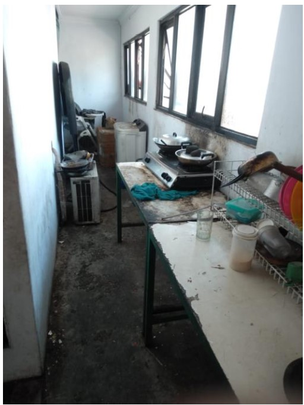
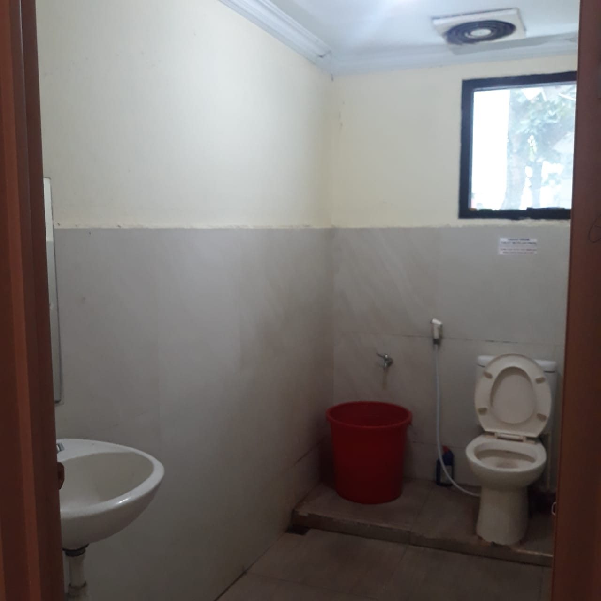
- Pada alamat Jl. Ir. H. Juanda No.43, Bakti Jaya, Kec. Sukmajaya, Kota Depok, Jawa Barat 16418
- Tanah dengan kepemilikan tunggal yang terdiri dari 7 (Tujuh) Sertifikat Hak Milik (SHM) dengan luas tanah kurang lebih 2.925 m2 yang terdiri dari :
+ Bangunan kantor 1, dengan luas bangunan kurang lebih 348 m2
+ Bangunan kantor 2, dengan luas bangunan kurang lebih 124 m2
+ Bangunan kantor 3, dengan luas bangunan kurang lebih 168 m2
+ Bangunan kantor 4, dengan luas bangunan kurang lebih 160 m2
+ Bangunan kantor 5, dengan luas bangunan kurang lebih 290 m2
+ Bangunan fasilitas berupa pendopo, dengan luas bangunan kurang lebih 136 m2
+ Bangunan fasilitas berupa kolam renang 1, dengan luas bangunan kolam renang kurang lebih 83 m2
+ Bangunan fasilitas berupa kolam renang 2, dengan luas bangunan kolam renang kurang lebih 58 m2